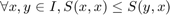
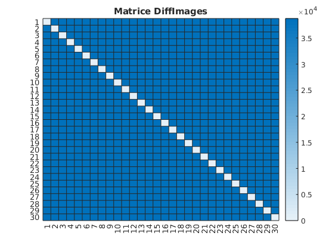

Contents
- Lecture images F(X)
- Afficher images
- Mesure de similarité
- SSD
- Entropie conjointe
- Information mutuelle
- Correlation croisée modifié
- Différence images pixel
- Recherche d'images
- Génération de l'image T(M(x)) à partir d'une image dans l'ensemble I
- L'optimisation SSD, Recherche d'images
- L'optimisation Entropie conjointe, Recherche d'images
- L'optimisation Correlation croisée modifié, Recherche d'images
- L'optimisation Différence Image, Recherche d'images
- Recherche rotation
- Génération de l'image T(M(x)) à partir d'une image dans l'ensemble I
- L'optimisation SSD
- L'optimisation Entropie conjointe
- L'optimisation Correlation croisée modifié
- L'optimisation Différence images pixel
- L'optimisation descente de gradient Différence Correlation croisée modifié
- Commentaire
clear all; close all addpath('./SimilarityMeasure')
Lecture images F(X)
path = './Images/'; S = dir([path, '*.jpg']); for k = 1:numel(S) images(:,:, k) = double(rgb2gray(imread([path,S(k).name]))); labels{k} = regexprep(S(k).name, '.png', ''); end [m, n, s] = size(images);
Afficher images
figure; colormap(gray) for k = 1:s subplot(5, 6, k) imagesc(images(:,:, k)) title(labels{k}) end
Mesure de similarité
I est l'ensemble des images généré par la fonction F(x), C est l'ensemble des caractéritique générer par la fonction Feature Extraction
Dans ce TP les caractéristiques sont les intensités des pixels.
Une mesure de similarité S est une fonction C × C -> R
Dans l'algorithme de recalage cette fonction est vu comme une fonction de coût à optimisé afin d'estimé theta la rotation de l'image transformé généré par la fonction T(M(x)). Afin d'implémenter un algorithme d'optimisation de façon à être invariant aux type de ces fonctions les fonction de coût possèderons ces propriétés
Symétrie
 Minimalité
Positivité
SSD
Matrice(images, SSD()).show();
Entropie conjointe
Matrice(images, EntropieConjointe()).show();
Information mutuelle
Mesure utile si la fonction de coût est à maximisé
Matrice(images, InformationMutuelle()).show();
Correlation croisée modifié
Pour avoir les bonnes propriétés CCm = (1-CC)^2
Matrice(images, CrossCorrelation()).show();
Différence images pixel
Matrice(images, DiffImages()).show();
Recherche d'images
Génération de l'image T(M(x)) à partir d'une image dans l'ensemble I
value = floor(rand(1)*size(images, 3))+1;
image1 = images(:,:,value);
figure;
colormap(gray)
imagesc(image1)
title(['Images : ', labels{value}])
L'optimisation SSD, Recherche d'images
OptimizationImage(SSD(), value).measure(image1, images).show(labels);
L'optimisation Entropie conjointe, Recherche d'images
OptimizationImage(EntropieConjointe(), value).measure(image1, images).show(labels);
L'optimisation Correlation croisée modifié, Recherche d'images
OptimizationImage(CrossCorrelation(), value).measure(image1, images).show(labels);
L'optimisation Différence Image, Recherche d'images
OptimizationImage(DiffImages(), value).measure(image1, images).show(labels);
Recherche rotation
Génération de l'image T(M(x)) à partir d'une image dans l'ensemble I
[theta, index, F, T] = GenImages(images); figure; colormap(gray) imagesc(T) title(['Image : ', labels{index} ,' Rotation : ', num2str(theta), ' degrées'])
L'optimisation SSD
OptimizationRotation(SSD(),theta).measure(T, F).show();
pass =
2
pass =
3
pass =
4
pass =
5
pass =
6
pass =
7

L'optimisation Entropie conjointe
OptimizationRotation(EntropieConjointe(), theta).measure(T, F).show();
pass =
2
pass =
3
pass =
4
pass =
5
pass =
6
pass =
7
L'optimisation Correlation croisée modifié
OptimizationRotation(CrossCorrelation(), theta).measure(T, F).show();
pass =
2
pass =
3
pass =
4
pass =
5
pass =
6
pass =
7

L'optimisation Différence images pixel
OptimizationRotation(DiffImages(), theta).measure(T, F).show();
pass =
2
pass =
3
pass =
4
pass =
5
pass =
6
pass =
7
L'optimisation descente de gradient Différence Correlation croisée modifié
%OptimizationRotationGradient(CrossCorrelation(), theta).measure(T, F).show();
Commentaire
Si on prend une valeur de rotation dans l'ensemble R il existera alors toujours une erreur puisque l'ensemble des images transformés par cette rotation est très largement inférieur à la précision de ces rotations théoriques.
Ces mesures de similarités restent pertinentes dans le cas où les images sont les mêmes, elle permette de guider l'optimisation vers des valeurs particulières, les minimaux. L'égalité entre images ne pourrait pas permettre cela.